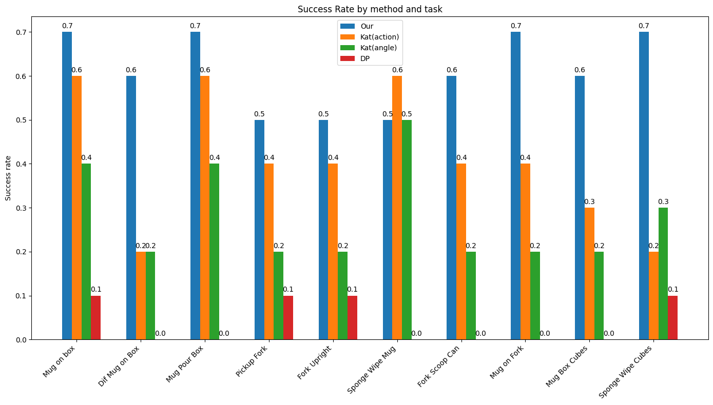

We show that by painting coordinate frames and trajectory lines onto images, a single pre-trained Vision Language Model (VLM) can perform few-shot imitation learning without any additional modules. Our method, Paint2Plan, uses a painted image as input and directly outputs the trajectory of the end-effector in 6 DoF, and undergoes replanning if necessary. By designing and integrating our image painting techniques in the perception, planning, and replanning phases, Paint2Plan enables robust performance in low-data regimes by enhancing the VLMs' multimodal pattern-learning ability. Through extensive simulation and physical experiments, we show that Paint2Plan achieves on-par or superior performance on a variety of everyday tasks, and a detailed ablation study confirms the effectiveness of our image painting techniques. This insight underscores the potential for future applications of VLMs to be used as single backbones in diverse and complex robotics tasks.
We introduce novel image painting techniques for our VLM-based trajectory prediction method that only requires a few (less than 10) demonstrations. The painted images enable VLMs to understand the scene, learn multimodal patterns, and replan trajectories if failure is detected.
Overview of the Paint2Plan pipeline. First, demonstrations are prepared by painting the images and processing the trajectory. Second, given these demonstrations and a new painted input image, the VLM predicts an initial trajectory. Finally, the generated trajectory is painted, and replanned if deemed unsatisfactory.
Please see our paper for full results, but the figures below summarise some of our experiments.
Success rates with 10 demonstrations for each task, for Paint2Plan, KAT with action tokens (act.), KAT with Cartesian positions and Euler angles (ang.) and Diffusion Policy.
Success rates for the baselines and our method with varying numbers of demonstrations.
Success rates of our method under six varying numbers of key waypoints: none, extremely-less, less, equal, more, extremely-more, all compared to the number of objects in the scene.
Success rates of different VLMs for the inference and critic phases.
We now illustrate how Paint2Plan can solve robotics tasks. We use Gemini 1.5 Pro for inference, and Claude 3.5 Sonnet for the critic. For each task, we provide 10 demonstrations and replan for 1 iteration.
Fork Scoop Can
Mug Box Cubes
Mug On Box
Mug On Fork
Special thanks to Norman Di Palo and Georgios Papagiannis for their discussions and suggestions during the work.